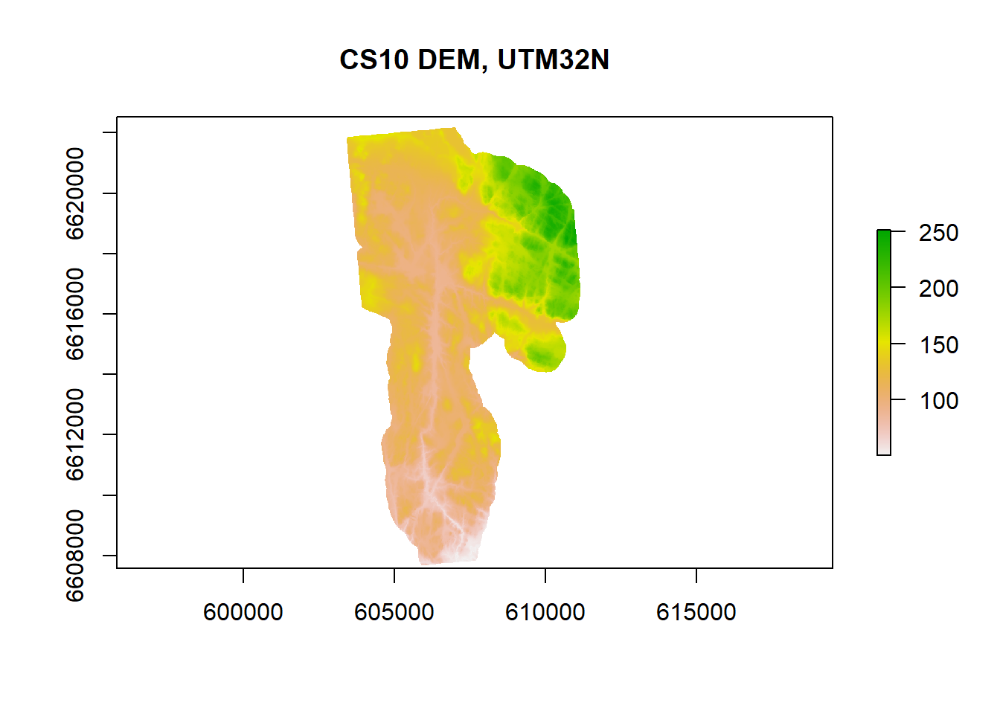
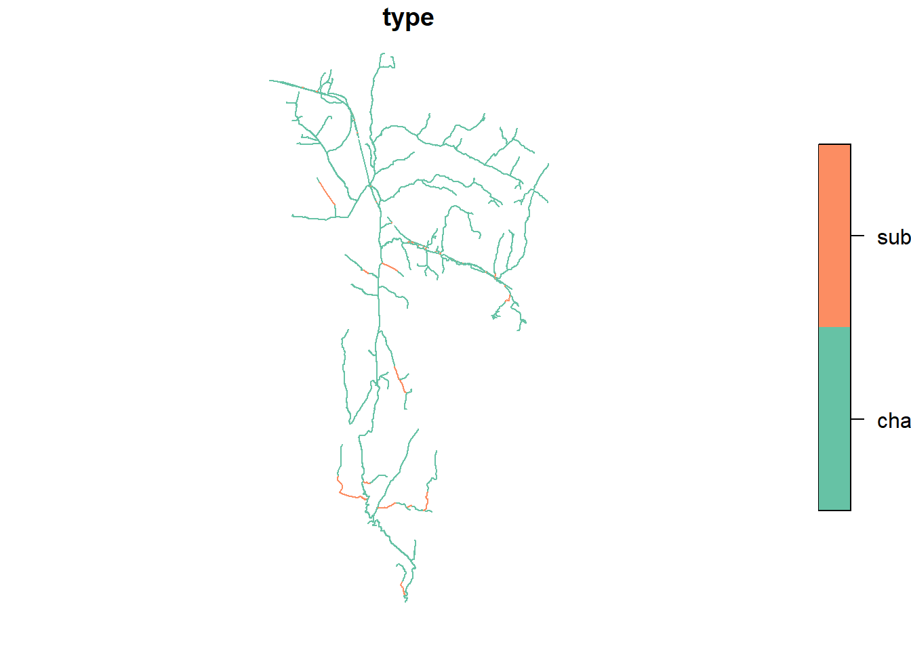
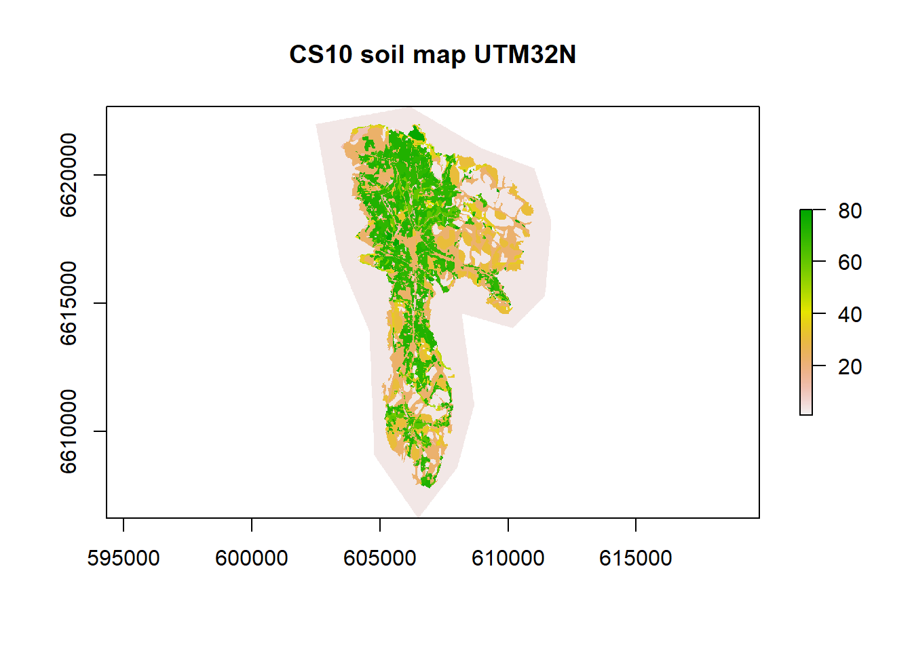

Chapter 2 Model setup with SWATBuildR
The OPTAIN project is using the COCOA approach Schürz et al. (2022) and as such, needs to use the SWATBuildR package to calculate the connectivity between HRUs in the catchment. This chapter covers this process.
We will define the location of our project here:
project_path <- 'model_data/cs10_setup'And give it the name:
project_name <- 'optain-cs10'Much of this documentation has been lost to time.
We will need the following packages for this chapter:
require(mapview)
require(sf)
require(raster)2.1 High-Resolution Digital Elevation Model (DEM)
The high-resolution DEM is the basis for calculation of water connectivity, among other things. Most of the documentation of the creation of the DEM for CS10 has been lost to the sands of time. All we know is that it is located here:
dem_path <- "model_data/input/elevation/dtm3_ns_v5.tif"plot(raster(dem_path), main = "CS10 DEM, UTM32N")
To our knowledge, it has a 10 meter resolution. 1 meter resolution was available but there seems to have been issues with using it. It is definitely preferable to use the 1m DEM as certain important information can be lost with (max allowed resolution) of 10m.

An example of a hydrologically effective landscape features being lost due to coarse DEM resolution. From(Schürz et al. 2022)
2.2 Processing the Basin Boundary
The basin boundary has presumably been created using the defined outlet point of the catchment and the DEM. No more is currently known about this file other than that it is located here:
bound_path <- "model_data/input/shape/cs10_basin.shp"We will begin using the SWATBuildR Package by initializing its functions. (Note: this package is currently unfinished, which is why this step is necessary).
The following code and commentary is from version 1.5.12, written by Christoph Schuerz.
Another note: there are currently issues with White box which are being resolved.
source('model_data/swat_buildR/init.R')BuildR recommends all layers to be in the same CRS, if we set project_layer to FALSE, it will throw an error when this is not the case:
The input layers might be in different coordinate reference systems (CRS). It is recommended to project all layers to the same CRS and check them before using them as model inputs. The model setup process checks if the layer CRSs differ from the one of the basin boundary. By setting ‘proj_layer <- TRUE’ the layer is projected if the CRS is different. If FALSE different CRS trigger an error.
project_layer <- TRUEWe read in and check the basin boundary and run some checks
bound <- read_sf(bound_path) %>% select()
set_proj_crs(bound, data_path)
check_polygon_topology(layer = bound, data_path = data_path, label = 'basin',
n_feat = 1, checks = c(F,T,T,T,F,F,F,F))## Running topological checks and modifications for the basin layer:
##
## Analyzing basin layer for specific number of features...
## ✔ Number of features correct.
## Analyzing basin layer for MULTIPOLYGON features...
## ✔ No MULTIPOLYGON features identified.
## Analyzing basin layer for invalid features...
## ✔ No invalid features identified.
##
##
## ✔ All checks successful! Saving checked basin layer.2.3 Processing the Land layer
Our land layer is located here:
land_path <- "model_data/input/land/CS10_LU.shp"Documentation on its creation does not exist.
Interactive land use map of CS10 by Farm ID
We had an issue with the classification of the land uses. For the OPTAIN project, all agricultural fields must have a unique ID, and our land uses only had the ID of the given farm KGB (which had many different fields). To remedy this, new IDs were generated with the format a_###f_# where a_ represents the farm, and f_ represents the respective field of that farm. The farm names needed to be shortened because the SWAT+ model often cannot handle long ID names (longer than 16 characters)
readr::read_csv("model_data/farm_id/a_f_id.csv", show_col_types = F) %>% head()## # A tibble: 6 × 4
## KGB type_fr sp_id field_ID
## <chr> <chr> <dbl> <chr>
## 1 213/8/1 a_084 1 a_084f_1
## 2 213/7/6 a_083 2 a_083f_1
## 3 213/7/6 a_083 3 a_083f_2
## 4 213/7/4 a_082 4 a_082f_1
## 5 213/65/1 a_081 5 a_081f_1
## 6 213/65/1 a_081 6 a_081f_2This was done in a simple QGIS workflow of dissolving by farm, splitting from single part to multipart, and then adding an iterating ID per farm field. This workflow could be replicated in R, and then shown here. It is under consideration…
This is our map with the new type IDs:
lu_map <- mapview(read_sf(land_path), zcol = "type", legend = FALSE)
lu_mapinteractive land use map of CS10 by Field ID
BuildR will now run some checks on our land layer.
land <- read_sf(land_path) %>%
check_layer_attributes(., type_to_lower = FALSE) %>%
check_project_crs(layer = ., data_path = data_path, proj_layer = project_layer,
label = 'land', type = 'vector')
check_polygon_topology(layer = land, data_path = data_path, label = 'land',
area_fct = 0.00, cvrg_frc = 99.9,
checks = c(T,F,T,T,T,T,T,T))## Running topological checks and modifications for the land layer:
##
## Intersection of land layer with basin boundary layer...
## ✔ Intersection completed.
## Analyzing land layer for MULTIPOLYGON features...
## ✔ No MULTIPOLYGON features identified.
## Analyzing land layer for invalid features...
## ✔ No invalid features identified.
## Analyzing land layer for very small feature areas...
## ✔ No small features identified.
## Analyzing land layer for features covered by other features...
## ✔ No covered features identified.
## Analyzing land layer for overlapping features...
## ✔ No overlapping features identified.
## Analyzing land layer coverage with basin boundary...
## ✔ Layer coverage OK.
##
##
## ✔ All checks successful! Saving intersected land layer.BuildR splits the land layer into HRU (land) and reservoir (water) objects
split_land_layer(data_path)2.4 Processing the Channels
No documentation exists on the source of the channels layer, all we know is that it is located here:
channel_path <- 'model_data/input/line/cs10_channels.shp'
channels <- read_sf(channel_path) %>% select("type")
plot(channels)
BuildR runs some checks:
channel <- read_sf(channel_path) %>%
check_layer_attributes(., type_to_lower = TRUE) %>%
check_project_crs(layer = ., data_path = data_path,
proj_layer = project_layer,
label = 'channel', type = 'vector')
check_line_topology(layer = channel, data_path = data_path,
label = 'channel', length_fct = 0, can_cross = FALSE)## Running topological checks and modifications for the channel layer:
##
## Intersection of channel layer with basin boundary layer...
## ✔ Intersection completed.
## Analyzing channel layer for MULTILINE features...
## ✔ No MULTILINE features identified.
## Analyzing channel layer for invalid features...
## ✔ No invalid features identified.
## Analyzing channel layer for very short feature lengths...
## ✔ No small features identified.
## Analyzing channel layer for crossing features...
## ✔ No crossing features identified.
##
## ✔ All checks successful! Saving intersected channel layer.And gives this output:
channels <- read_sf("model_data/cs10_setup/optain-cs10/data/vector/channel.shp")
channel_map <- mapview(channels, zcol = "type")
bound_map+channel_mapBuildR then checks the connectivity between the channels and reservoirs. For this we need to define our id_cha_out and id_res_out.
Variable
id_cha_outsets the outlet point of the catchment. Either define a channel OR a reservoir as the final outlet. If channel then assignid_cha_outwith the respective id from the channel layer. If reservoir then assign the respective id from the land layer to id_res_out, otherwise leave asNULL
id_cha_out <- 37
id_res_out <- NULLRunning connectivity checks between channels and reservoirs:
check_cha_res_connectivity(data_path, id_cha_out, id_res_out)## Preparing channel and reservoir features...
## ✔ OK!
## Analyzing connectivity of water object network...
## ✔ No disconnected channels identified.
## ✔ No disconnected reservoirs identified.
##
##
## ✔ Water object connectivity check successful!Checking if any defined channel ids for drainage from land objects do not exist
check_land_drain_ids(data_path)2.5 Processing the DEM
BuildR loads and checks the DEM, and saves it.
dem <- rast(dem_path) %>%
check_project_crs(layer = ., data_path = data_path, proj_layer = project_layer,
label = 'dem', type = 'raster')
check_raster_coverage(rst = dem, vct_layer = 'land', data_path = data_path,
label = 'dem', cov_frc = 0.95)
save_dem_slope_raster(dem, data_path)## clip_raster_to_polygon - Elapsed Time (excluding I/O): 1min 23.521s
## slope - Elapsed Time (excluding I/O): 0.531s## [1] TRUE2.6 Processing soil data
Our soil map is located here:
soil_layer_path <- 'model_data/input/soil/soil_layer.tif'No documentation exists on its creation.

The soil data and lookup path are located here:
soil_lookup_path <- 'model_data/input/soil/soil_lookup.csv'
soil_data_path <- 'model_data/input/soil/UserSoil_Krakstad.csv'Not much documentation exists here either. Some can be found in the excel sheet:
## [1] "model_data/input/soil/swatsoil2.xlsx"BuildR reads in the soil data, performs checks, processes, and saves.
NOTE: THIS IS CURRENTLY BROKEN, WITH ERROR MESSAGE:
Warning: Cannot find coordinate operations from
EPSG:2583[“unnamed”,EDATUM[“”], CS[Cartesian,2], AXIS[“(E)”, east, ORDER[1], LENGTHUNIT[“unknown”, 1]], AXIS[“(N)”, north, ORDER[2], LENGTHUNIT[“unknown”, 1]]]’ (GDAL error 6) Error: [project] Cannot do this transformation
soil <- rast(soil_layer_path) %>%
check_project_crs(layer = ., data_path = data_path, proj_layer = project_layer,
label = 'soil', type = 'raster')
check_raster_coverage(rst = soil, vct_layer = 'hru', data_path = data_path,
label = 'soil', cov_frc = 0.75)
# BROKEN
#save_soil_raster(soil, data_path)
# added soil.tif from back when it used to workBuildR then generates a table with aggregated elevation, slope, soil for HRU units.
# waiting on soil fix.
#aggregate_hru_dem_soil(data_path)Read and prepare the soil input tables and a soil/hru id table and write them into data_path/tables.sqlite
#build_soil_data(soil_lookup_path, soil_data_path, data_path)2.7 Calculating land unit connectivity
Preparing raster layers based on the DEM and the surface channel objects that will be used in the calculation of the land object connectivity.
#prepare_terrain_land(data_path)The connection of each land object to neighboring land and water objects is calculated based on the flow accumulation and the D8 flow pointer along the object edge
# calculate_land_connectivity(data_path)2.7.1 Eliminate land object connections with small flow fractions:
For each land object the flow fractions are compared to connection with the largest flow fraction of that land object. Connections are removed if their fraction is smaller than frc_thres relative to the largest one.
This is necessary to:
Simplify the connectivity network
To reduce the risk of circuit routing between land objects. Circuit routing will be checked.
If an error due to circuit routing is triggered, then ‘frc_thres’ must be increased to remove connectivities that may cause this issue.
frc_thres <- 0.3The remaining land object connections are analyzed for infinite loop routing. For each land unit the connections are propagated and checked if the end up again in the same unit.
#reduce_land_connections(data_path, frc_thres) %>%
# check_infinite_loops(., data_path, 'Land')If infinite loops were identified this routine tries to resolve the issues by selectively removing connections between land units in order to get rid of all infinite loops.
# resolve_loop_issues(data_path)2.8 Calculating channel/reservoir connectivity
2.9 Terrain properties
Calculate terrain properties such as elevation, slope, catchment area, channel width/depth for channel and reservoir objects and write them into data_path/tables.sqlite
#prepare_terrain_water(data_path)2.10 Generate land object SWAT+ input tables
Build the landuse.lum and a landuse/hru id table and write them into data_path/tables.sqlite
#build_landuse(data_path)Build the HRU SWAT+ input files and write them into data_path/tables.sqlite
#build_hru_input(data_path)Add wetlands to the HRUs and build the wetland input files and write them into data_path/tables.sqlite
(TODO fix this!)
wetland_landuse <- c('wehb', 'wetf', 'wetl', 'wetn')#add_wetlands(data_path, wetland_landuse)2.11 Generate water object SWAT+ input tables
Build the SWAT+ cha input files and write them into data_path/tables.sqlite
#build_cha_input(data_path)Build the SWAT+ res input files and write them into data_path/tables.sqlite
#build_res_input(data_path)Build SWAT+ routing unit con_out based on ‘land_connect_fraction’.
#build_rout_con_out(data_path)Build the SWAT+ rout_unit input files and write them into data_path/tables.sqlite
#build_rout_input(data_path)Build the SWAT+ LSU input files and write them into data_path/tables.sqlite
#build_ls_unit_input(data_path)2.12 Build aquifer input
Build the SWAT+ aquifer input files for a single aquifer for the entire catchment. The connectivity to the channels with geomorphic flow must be added after writing the txt input files. This is not implemented in the script yet.
#build_single_aquifer_files(data_path)2.13 Add point source inputs
The point source locations are provided with a point vector layer in the path ‘point_path’.
point_path <- 'model_data/input/point/cs10_pointsource.shp'point_sf <- read_sf(point_path)
point_map <- mapview(point_sf, zcol = "GRAD_P", cex = "GRAD_N")
point_map+channel_map+bound_mapMap of point sources, colored by (assumed) phosphorous and size by (assumed) Nitrogren
Maximum distance of a point source to a channel or a reservoir to be included as a point source object (recall) in the model setup:
max_point_dist <- 500 #metersPoint source records can automatically be added from files in the same folder as the point source location layer. To be identified as point source data the files must be named as <name>_<interval>.csv, where <name> must be the name of a point int the vector layer and <interval> must be one of const, yr, mon, or day depending on the time intervals in the input data.
#add_point_sources(point_path, data_path, max_point_dist)2.14 Create SWAT+ sqlite database
2.14.1 Write the SWAT+Editor project database
The database will be located the ‘project_path’. After writing the database it can be opened and edited with the SWAT+Editor.
#create_swatplus_database(project_path, project_name)The next step involves you entering the SWAT+ Editor and parameterizing the model from there. These are the steps we have taken, with screenshots since it is currently not possible to replicate this process in R.
2.15 TODO
Switch to SWAT+Editor for further model parametrization and continue with the step below after writing the SWAT+ projects’ text input files
2.16 Link aquifers and channels with geomorphic flow
A SWATbuildR model setup only has one single aquifer (in its current version). This aquifer is linked with all channels through a channel- aquifer-link file (aqu_cha.lin) in order to maintain recharge from the aquifer into the channels using the geomorphic flow option of SWAT+ The required input file cannot be written with the SWAT+Editor. Therefore it has to be generated in a step after writing the model text input files with the SWAT+Editor.
Path of the TxtInOut folder (project folder where the SWAT+ text files are written with the SWAT+Editor)
txt_path <- '../swat_runs/txtinouit/'#link_aquifer_channels(txt_path)